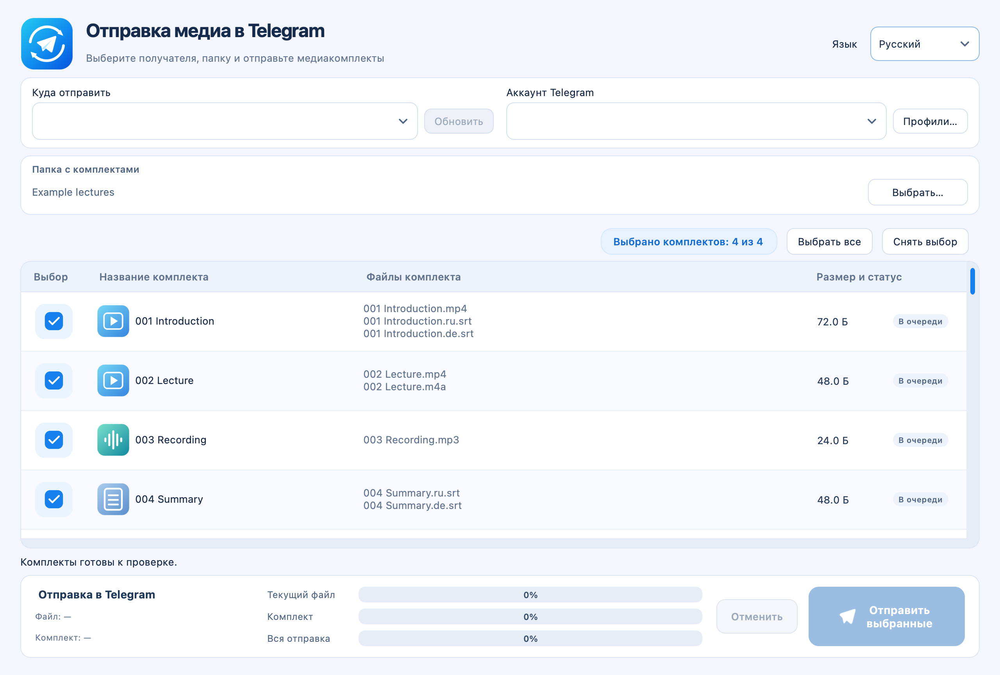

macOS 13+ · Apple Silicon
Telegram Media Sender
Отправляет пронумерованные наборы видео, аудио и субтитров в Telegram в выбранном порядке.
Выпуск · 1.1.2Перед запускомНужны собственный аккаунт Telegram, API ID и API Hash; приложение не нотарифицировано Apple.


Как это работает
- Выбрать файлы
- Задать порядок
- Отправить в Telegram
Первые шаги
Распакуйте архив, перенесите Telegram Media Sender.app в Applications и настройте подключение по руководству.